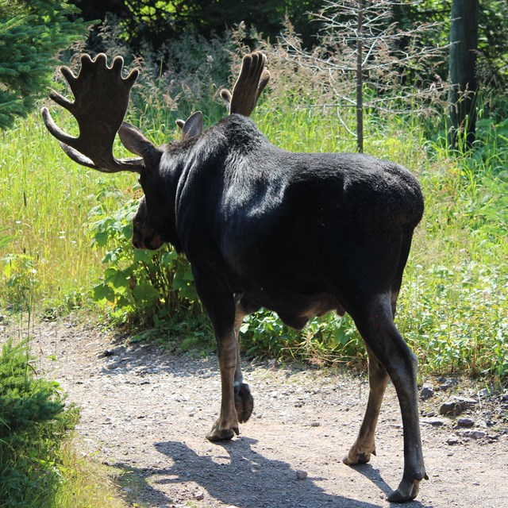
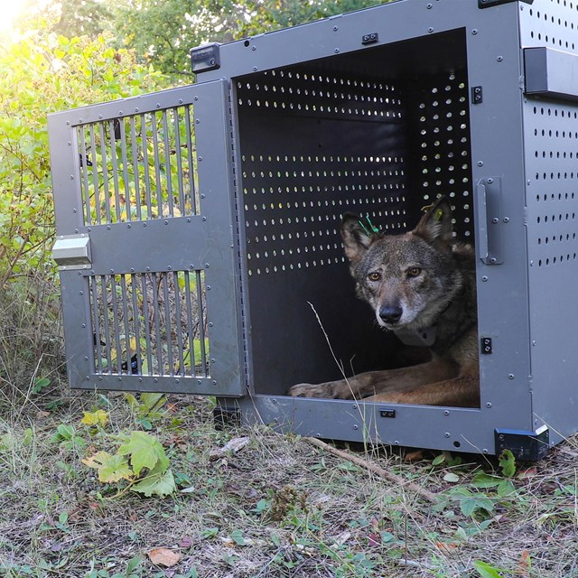

|  |
BackgroundHerbivores play a crucial role in maintaining the ecosystem balance affecting vegetation. Moose play a crucial role as a keystone species in boreal forests, significantly enhancing biodiversity and maintaining ecosystem health. It’s vital to understand the factors influencing moose populations, especially given the challenges posed by climate change. Addressing these dynamics is essential for effective conservation strategies & ecosystem management. |
|  |
Climate change significantly threatens wildlife by altering habit availability, food resources, and species interaction. Studies highlight how rising temperatures and changing precipitation patterns affect the survival and the reproductive success of larger mammals [1]. This emphasizes the need for conservation efforts to ensure resilience of the species in a changing environment. Research indicates that with increased winter severity, exacerbated by climate change, this can adversely affect the health and reproductive rate of moose. A study done in interior Alaska showed harsh winter conditions contributed to a high mortality rate amongst calves and highlighted a direct correlation between climate variables and moose population dynamics [2]. Despite these findings, there is still a gap in integrated research exploring combined effects of climate change on moose and their predator, the wolf. Most literature focuses on the species separately limiting our understanding of the dynamic interactions with a changing environment. This calls for the need for comprehensive research studying the interconnectedness of the species in their ecosystems. |